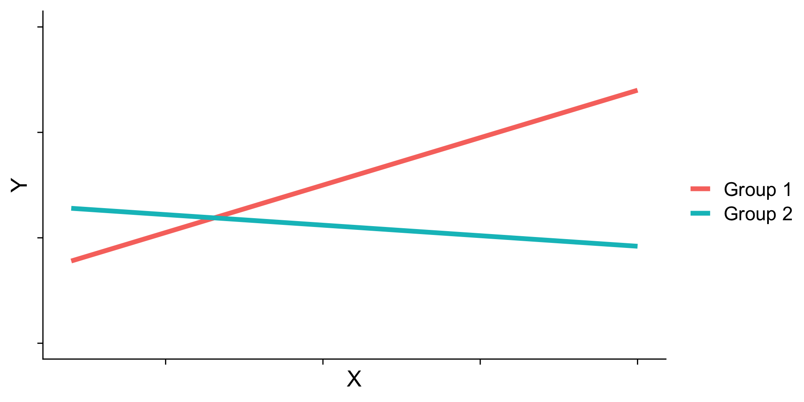
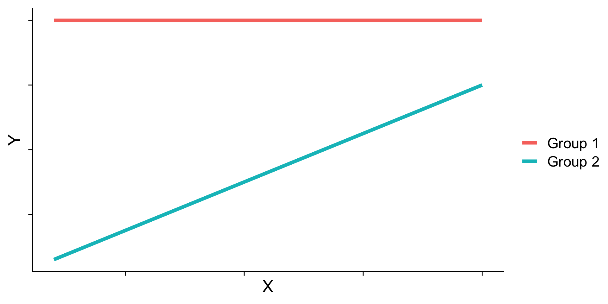

Interactions
Last time
Causal models as a tool for model building
Today
Interactions/moderation
Motivating example
library(tidyverse)
t_data = read_csv("https://raw.githubusercontent.com/uopsych/psy612/master/data/tutor.csv")
glimpse(t_data)Rows: 20
Columns: 4
$ ID <dbl> 1, 2, 3, 4, 5, 6, 7, 8, 9, 10, 11, 12, 13, 14, 15, 16, 17, 18, 1…
$ study <dbl> 1.62, 0.54, 0.86, 0.80, 0.36, 2.14, 1.13, 1.66, 1.23, 1.92, 1.82…
$ grade <dbl> 9.0, 7.8, 8.5, 6.2, 6.9, 9.0, 6.6, 8.7, 6.6, 8.8, 9.7, 5.9, 9.5,…
$ tutor <dbl> 1, 1, 1, 0, 0, 1, 0, 1, 0, 1, 1, 0, 1, 0, 1, 0, 0, 0, 1, 0...
Coefficients:
Estimate Std. Error t value Pr(>|t|)
(Intercept) 6.7600 0.2804 24.108 0.00000000000000375 ***
tutor 2.1300 0.3966 5.371 0.00004186706304119 ***
...Consider the regression model below. How do we interpret the coefficient, \(b_1\) ?
\[\hat{\text{grade}} = b_{0} + b_{1}\text{Tutor}\]
\(b_0\) is the mean of the reference group (no tutor), and \(b_1\) represents the difference in means between the two groups.
Visualizing
Code
means = t_data %>%
group_by(tutor_lab) %>%
summarize(M = mean(grade))
mod1 = lm(grade ~ tutor, data = t_data)
predict.1 = data.frame(study = rep(.5,2), tutor = c(0,1))
predict.1$grade = predict(mod1, newdata = predict.1)
predict.1 = cbind(predict.1[1,], predict.1[2,])
names(predict.1) = c("x1", "d1", "y1", "x2", "d2", "y2")
ggplot(t_data, aes(tutor,grade, color = tutor_lab)) +
geom_jitter(size = 3, width = .05) +
geom_hline(aes(yintercept = M, color = tutor_lab),
data = means, size = 1.5) +
geom_segment(aes(x = x1, y = y1, xend = x2, yend = y2), data = predict.1,
inherit.aes = F, size = 1.5)+
scale_x_continuous(breaks = c(0,1), labels = c("No tutor", "tutor")) +
scale_y_continuous(limits =c(5,10)) +
labs(x = "Group", y = "Grade (out of 10)", color = "") +
cowplot::theme_cowplot()Visualizing
Code
means = t_data %>%
group_by(tutor_lab) %>%
summarize(M = mean(grade))
mod1 = lm(grade ~ tutor, data = t_data)
predict.1 = data.frame(study = rep(mean(t_data$study),2), tutor = c(0,1))
predict.1$grade = predict(mod1, newdata = predict.1)
predict.1 = cbind(predict.1[1,], predict.1[2,])
names(predict.1) = c("x1", "d1", "y1", "x2", "d2", "y2")
ggplot(t_data, aes(study,grade, color = tutor_lab)) +
geom_point(size = 3) +
geom_hline(aes(yintercept = M, color = tutor_lab),
data = means, size = 1.5) +
geom_segment(aes(x = x1, y = y1, xend = x2, yend = y2), data = predict.1,
inherit.aes = F, size = 1.5)+
labs(x = "Hours studying", y = "Grade (out of 10)", color = "") +
scale_y_continuous(limits =c(5,10)) +
cowplot::theme_cowplot()Interpreting slopes
Extending this to the multivariate case, let’s add hours spent studying (study) as another covariate.
...
Coefficients:
Estimate Std. Error t value Pr(>|t|)
(Intercept) 5.5882 0.3198 17.474 0.00000000000269 ***
tutor_labTutor 1.3751 0.3183 4.320 0.000465 ***
study 1.1777 0.2565 4.592 0.000259 ***
...\[\hat{Y} = b_{0} + b_{1}\text{Tutor} + b_2\text{Study}\]
How do we interpret \(b_1?\)
...
Coefficients:
Estimate Std. Error t value Pr(>|t|)
(Intercept) 5.5882 0.3198 17.474 0.00000000000269 ***
tutor_labTutor 1.3751 0.3183 4.320 0.000465 ***
study 1.1777 0.2565 4.592 0.000259 ***
...\[\hat{Y} = b_{0} + b_{1}\text{Tutor} + b_2\text{Study}\]
\(b_1\) is the difference in means between the two groups if the two groups have the same average level of hours studying or holding study constant.
This, by the way, is ANCOVA.
Visualizing
Code
mod = lm(grade ~ study + tutor_lab, data = t_data)
t_data$pmod = predict(mod)
predict.2 = data.frame(study = rep(mean(t_data$study), 2), tutor_lab = c("No tutor", "Tutor"))
predict.2$grade = predict(mod, newdata = predict.2)
predict.2 = cbind(predict.2[1,], predict.2[2,])
names(predict.2) = c("x1", "d1", "y1", "x2", "d2", "y2")
ggplot(t_data, aes(study,grade, color = tutor_lab)) +
geom_point(size = 3, aes(color = tutor_lab)) +
geom_smooth(aes(y = pmod), method = "lm", se = F)+
geom_segment(aes(x = x1, y = y1, xend = x2, yend = y2), data = predict.2,
inherit.aes = F, size = 1.5)+
labs(x = "Hours studying", y = "Grade (out of 10)", color = "") +
scale_y_continuous(limits =c(5,10)) +
cowplot::theme_cowplot()Visualizing
Code
ggplot(t_data, aes(study, grade, group = tutor_lab)) +
geom_point(size = 3, aes(shape = tutor_lab, color = tutor_lab)) +
geom_smooth(aes(y = pmod), method = "lm", se = F, color = "black")+
geom_hline(aes(yintercept = M), linetype = "dashed",
data = means, size = 1.5) +
geom_segment(aes(x = x1, y = y1, xend = x2, yend = y2), data = predict.2,
inherit.aes = F, size = 1.5) +
geom_segment(aes(x = x1+.05, y = y1, xend = x2+.05, yend = y2), data = predict.1,
inherit.aes = F, size = 1.5, linetype = "dashed") +
labs(x = "Hours studying", y = "Grade (out of 10)", color = "", shape = "") +
scale_y_continuous(limits =c(5,10)) +
cowplot::theme_cowplot()What are interactions?
When we have two variables, A and B, in a regression model, we are testing whether these variables have additive effects on our outcome, Y. That is, the effect of A on Y is constant over all values of B.
- Example: Studying and working with a tutor have additive effects on grades; no matter how many hours I spend studying, working with a tutor will improve my grade by 2 points.
What are interactions?
However, we may hypothesis that two variables have joint effects, or interact with each other. In this case, the effect of A on Y changes as a function of B.
Example: Working with a tutor has a positive impact on grades but only for individuals who do not spend a lot of time studying; for individuals who study a lot, tutoring will have little or no impact.
This is also referred to as moderation.
Interactions (moderation) tell us whether the effect of one IV (on a DV) depends on another IV.
Interactions
Now extend this example to include joint effects, not just additive effects:
\[\hat{\text{grade}} = b_{0} + b_{1}\text{Tutor} + b_2\text{Study} + b_3(\text{Tutor}\times\text{Study})\]
mod3 = lm(grade ~ tutor_lab + study + tutor_lab:study, data = t_data)
mod3 = lm(grade ~ tutor_lab*study, data = t_data)
summary(mod3)...
Coefficients:
Estimate Std. Error t value Pr(>|t|)
(Intercept) 5.0121 0.3496 14.337 0.00000000015 ***
tutor_labTutor 2.9203 0.6418 4.550 0.000328 ***
study 1.7567 0.3095 5.676 0.00003443132 ***
tutor_labTutor:study -1.1713 0.4402 -2.661 0.017093 *
...Visualizing
Where should we draw the segment to compare means?
Interpreting coefficients
\[\hat{\text{grade}} = b_{0} + b_{1}\text{Tutor} + b_2\text{Study} + b_3(\text{Tutor}\times\text{Study})\]
...
Coefficients:
Estimate Std. Error t value Pr(>|t|)
(Intercept) 5.0121 0.3496 14.337 0.00000000015 ***
tutor_labTutor 2.9203 0.6418 4.550 0.000328 ***
study 1.7567 0.3095 5.676 0.00003443132 ***
tutor_labTutor:study -1.1713 0.4402 -2.661 0.017093 *
...Intercept: the expected value of Y when all predictors are 0
\(b_1\): The difference in means (tutor vs no tutor) when study = 0
\(b_2\): The slope of study when tutor = 0, or the reference group
\(b_3\)?
Interpreting coefficients
\[\hat{\text{grade}} = b_{0} + b_{1}\text{Tutor} + b_2\text{Study} + b_3(\text{Tutor}\times\text{Study})\]
\(b_3\)
- the linear effect of the product of hours studying and tutoring
- the degree of curvature in the regression plane
- how much the slope of
studydiffers for the two tutoring groups - how much the effect of tutoring changes for for every one 1 hour increase in studying.
Terms
Interactions tell us whether the effect of one IV (on a DV) depends on another IV. In this case, the effect of tutoring depends on a student’s time spent studying. Tutoring has a large effect when a student’s spends little time studying, but a small effect when the amount of time studying is high.
\(b_3\) is referred to as a “higher-order term.”
Higher-order terms are those terms that represent interactions.
Terms
Lower-order terms change depending on the values of the higher-order terms. The value of \(b_1\) and \(b_2\) will change depending on the value of \(b_3\).
- These values represent “conditional effects” (because the value is conditional on the level of the other variable). In many cases, the value and significance test with these terms is either meaningless (if an IV is never equal to 0) or unhelpful, as these values and significance change across the data.
Conditional effects and simple slopes
The regression line estimated in this model is quite difficult to interpret on its own. A good strategy is to decompose the regression equation into simple slopes, which are determined by calculating the conditional effects at a specific level of the moderating variable.
Simple slope: the equation for Y on X at different levels of Z
Conditional effect: the slope coefficients in the full regression model that can change. These are the lower-order terms associated with a variable. E.g., studying has a conditional effect on grade.
The conditional nature of these effects is easiest to see by “plugging in” different values for one of your variables. Return to the regression equation estimated in our tutoring data:
...
Coefficients:
Estimate Std. Error t value Pr(>|t|)
(Intercept) 5.0121 0.3496 14.337 0.00000000015 ***
tutor_labTutor 2.9203 0.6418 4.550 0.000328 ***
study 1.7567 0.3095 5.676 0.00003443132 ***
tutor_labTutor:study -1.1713 0.4402 -2.661 0.017093 *
...\[\hat{\text{grade}} = 5.01 + 2.92(\text{Tutor})+ 1.76(\text{Study})+ -1.17(\text{T} \times \text{S})\]
Set Tutoring to 0
\[ \begin{aligned} \hat{\text{grade}} &= 5.01 + 2.92(0)+ 1.76(\text{Study})+ -1.17(0 \times \text{Study}) \\ &= 5.01 + 0+ 1.76(\text{Study})+ 0(\text{Study}) \\ &= 5.01 + 1.76(\text{Study}) \end{aligned} \]
...
Coefficients:
Estimate Std. Error t value Pr(>|t|)
(Intercept) 5.0121 0.3496 14.337 0.00000000015 ***
tutor_labTutor 2.9203 0.6418 4.550 0.000328 ***
study 1.7567 0.3095 5.676 0.00003443132 ***
tutor_labTutor:study -1.1713 0.4402 -2.661 0.017093 *
...\[\hat{\text{grade}} = 5.01 + 2.92(\text{Tutor})+ 1.76(\text{Study})+ -1.17(\text{T} \times \text{S})\]
Set Tutoring to 1
\[ \begin{aligned} \hat{\text{grade}} &= 5.01 + 2.92(1)+ 1.76(\text{Study})+ -1.17(1 \times \text{Study}) \\ &= 5.01 + 2.92+ 1.76(\text{Study})+ -1.17(\text{Study}) \\ &= 7.93 + 0.59(\text{Study}) \end{aligned} \] ————————————————————————
Interaction shapes
Often we graph the simple slopes as a way to understand the interaction. The shape of the lines in the graph are informative and help us interpret conceptually what’s happening.
Cross-over interactions
Ordinal interactions

Interaction shapes
Ordinal interactions (beware…)
Simple slopes - Significance tests
The slope of studying at a specific level of tutoring (1 or 0) is a combination of both \(b_1\) and \(b_3\):
\[\large \hat{Y} = (b_{0} + b_{2}D) + (b_{1} + b_{3}D)X\] \[\large se_{b@D} = \sqrt{se_{b_1}^2 + (2 * D * cov_{b_1b_3})+ (D^2 se_{b_3}^2)}\]
\[\large se_{b@D} = \sqrt{se_{b_1}^2 + (2 * D * cov_{b_1b_3})+ (D^2 se_{b_3}^2)}\] In this formula, \(cov_{b_1b_3}\) refers to the covariance of the coefficients, not the covariance of the variables. This may seem a strange concept, as we only ever have one value for \(b_1\) and \(b_3\) – the covariance of these coefficients refer to idea that if we randomly sample from a population, estimate the coefficients each time, and then examine the covariance of coefficients across random samples, it will not be 0.
Significance tests
We can use the standard error of the slope to estimate whether or not it is significantly different from 0.
\[\large \hat{Y} = (b_{0} + b_{2}D) + (b_{1} + b_{3}D)X\] \[\large t = \frac{(b_{1} + b_{3}D)}{se_{b@D}}\] \[df = N-p-1\]
Significance tests in R
We want to know whether studying is a significant predictor of grades at different levels of tutoring.
Significance tests in R
What if you want to compare slopes to each other? How would we test this?
Significance tests in R
Note that this significance test is the same as our interaction coefficient!
Estimate Std. Error t value Pr(>|t|)
(Intercept) 5.012076 0.3495910 14.336973 0.0000000001502173
tutor_labTutor 2.920264 0.6418121 4.550030 0.0003278477460362
study 1.756707 0.3095144 5.675688 0.0000344313228001
tutor_labTutor:study -1.171341 0.4402441 -2.660662 0.0170931704270407Significance tests in R
What if you want to compare the effect of tutoring at different levels of studying?
First, we can calculate specific fitted values at combinations of studying and tutoring.
mylist <- list(study=c(.50,1,2), tutor_lab=c("No tutor","Tutor"))
emmeans(mod3, ~ study*tutor_lab, at=mylist) study tutor_lab emmean SE df lower.CL upper.CL
0.5 No tutor 5.89 0.225 16 5.41 6.37
1.0 No tutor 6.77 0.165 16 6.42 7.12
2.0 No tutor 8.53 0.352 16 7.78 9.27
0.5 Tutor 8.23 0.392 16 7.39 9.06
1.0 Tutor 8.52 0.259 16 7.97 9.07
2.0 Tutor 9.10 0.201 16 8.68 9.53
Confidence level used: 0.95 Next, we can use the contrast function to look at pairwise comparisons of these fitted values.
study = 0.5:
contrast estimate SE df t.ratio p.value
No tutor - Tutor -2.335 0.452 16 -5.160 0.0001
study = 1.0:
contrast estimate SE df t.ratio p.value
No tutor - Tutor -1.749 0.307 16 -5.693 <.0001
study = 2.0:
contrast estimate SE df t.ratio p.value
No tutor - Tutor -0.578 0.406 16 -1.424 0.1736Centering
The regression equation built using the raw data is not only diffiuclt to interpret, but often the terms displayed are not relevant to the hypotheses we’re interested.
- \(b_0\) is the expected value when all predictors are 0, but this may never happen in real life
- \(b_1\) is the effect of tutoring when hours spent studying is equal to 0, but this may not ever happen either.
Centering your variables by subtracting the mean from all values can improve the interpretation of your results.
- Remember, a linear transformation does not change associations (correlations) between variables. In this case, it only changes the interpretation for some coefficients.
# A tibble: 6 × 6
ID study grade tutor tutor_lab study_c
<dbl> <dbl> <dbl> <dbl> <fct> <dbl>
1 1 1.62 9 1 Tutor 0.304
2 2 0.54 7.8 1 Tutor -0.776
3 3 0.86 8.5 1 Tutor -0.456
4 4 0.8 6.2 0 No tutor -0.516
5 5 0.36 6.9 0 No tutor -0.956
6 6 2.14 9 1 Tutor 0.824Why did we not center Y (grades)?
Call:
lm(formula = grade ~ tutor_lab + study_c + tutor_lab:study_c,
data = t_data)
Residuals:
Min 1Q Median 3Q Max
-0.5728 -0.3837 -0.1584 0.1838 1.2555
Coefficients:
Estimate Std. Error t value Pr(>|t|)
(Intercept) 7.3230 0.1929 37.963 < 0.0000000000000002 ***
tutor_labTutor 1.3794 0.2732 5.049 0.000119 ***
study_c 1.7567 0.3095 5.676 0.0000344 ***
tutor_labTutor:study_c -1.1713 0.4402 -2.661 0.017093 *
---
Signif. codes: 0 '***' 0.001 '**' 0.01 '*' 0.05 '.' 0.1 ' ' 1
Residual standard error: 0.5232 on 16 degrees of freedom
Multiple R-squared: 0.8811, Adjusted R-squared: 0.8588
F-statistic: 39.53 on 3 and 16 DF, p-value: 0.0000001259
Call:
lm(formula = grade ~ tutor_lab + study + tutor_lab:study, data = t_data)
Residuals:
Min 1Q Median 3Q Max
-0.5728 -0.3837 -0.1584 0.1838 1.2555
Coefficients:
Estimate Std. Error t value Pr(>|t|)
(Intercept) 5.0121 0.3496 14.337 0.00000000015 ***
tutor_labTutor 2.9203 0.6418 4.550 0.000328 ***
study 1.7567 0.3095 5.676 0.00003443132 ***
tutor_labTutor:study -1.1713 0.4402 -2.661 0.017093 *
---
Signif. codes: 0 '***' 0.001 '**' 0.01 '*' 0.05 '.' 0.1 ' ' 1
Residual standard error: 0.5232 on 16 degrees of freedom
Multiple R-squared: 0.8811, Adjusted R-squared: 0.8588
F-statistic: 39.53 on 3 and 16 DF, p-value: 0.0000001259What changed? What stayed the same?
Example
What if our categorical variable has three groups?
t_data2 = read_csv("https://raw.githubusercontent.com/uopsych/psy612/master/data/tutor_3grp.csv")
glimpse(t_data2)Rows: 30
Columns: 4
$ ID <dbl> 1, 2, 3, 4, 5, 6, 7, 8, 9, 10, 11, 12, 13, 14, 15, 16, 17, 18, 1…
$ study <dbl> 0.76, 0.21, 0.43, 0.44, 1.65, 1.46, 0.70, 0.90, 0.40, 0.58, 0.80…
$ grade <dbl> 8.9, 8.6, 8.6, 8.5, 7.7, 7.5, 6.6, 6.8, 8.6, 8.3, 6.7, 7.9, 7.8,…
$ tutor <chr> "One-on-one tutor", "One-on-one tutor", "One-on-one tutor", "One…
Call:
lm(formula = grade ~ study * tutor, data = t_data2)
Residuals:
Min 1Q Median 3Q Max
-0.85839 -0.04148 -0.01957 0.03061 0.91044
Coefficients:
Estimate Std. Error t value Pr(>|t|)
(Intercept) 6.4485 0.3188 20.229 < 0.0000000000000002
study 0.2748 0.4135 0.665 0.51262
tutorNo tutor -0.3143 0.6135 -0.512 0.61308
tutorOne-on-one tutor 2.8758 0.4111 6.996 0.000000311
study:tutorNo tutor 0.6737 0.5090 1.324 0.19807
study:tutorOne-on-one tutor -2.0312 0.6121 -3.318 0.00288
(Intercept) ***
study
tutorNo tutor
tutorOne-on-one tutor ***
study:tutorNo tutor
study:tutorOne-on-one tutor **
---
Signif. codes: 0 '***' 0.001 '**' 0.01 '*' 0.05 '.' 0.1 ' ' 1
Residual standard error: 0.312 on 24 degrees of freedom
Multiple R-squared: 0.8857, Adjusted R-squared: 0.8618
F-statistic: 37.18 on 5 and 24 DF, p-value: 0.0000000001532What if we want a different reference group?
t_data2 = t_data2 %>%
mutate(tutor = as.factor(tutor)) %>% # only necessary if your variable is character, not factor
mutate(tutor = relevel(tutor, ref = "No tutor"))
mod4 = lm(grade ~ study*tutor, data = t_data2)
summary(mod4)
Call:
lm(formula = grade ~ study * tutor, data = t_data2)
Residuals:
Min 1Q Median 3Q Max
-0.85839 -0.04148 -0.01957 0.03061 0.91044
Coefficients:
Estimate Std. Error t value Pr(>|t|)
(Intercept) 6.1342 0.5242 11.702 0.000000000021 ***
study 0.9486 0.2967 3.197 0.00387 **
tutorGroup tutor 0.3143 0.6135 0.512 0.61308
tutorOne-on-one tutor 3.1902 0.5850 5.454 0.000013237857 ***
study:tutorGroup tutor -0.6737 0.5090 -1.324 0.19807
study:tutorOne-on-one tutor -2.7049 0.5401 -5.008 0.000040705983 ***
---
Signif. codes: 0 '***' 0.001 '**' 0.01 '*' 0.05 '.' 0.1 ' ' 1
Residual standard error: 0.312 on 24 degrees of freedom
Multiple R-squared: 0.8857, Adjusted R-squared: 0.8618
F-statistic: 37.18 on 5 and 24 DF, p-value: 0.0000000001532$emtrends
tutor study.trend SE df lower.CL upper.CL
No tutor 0.949 0.297 24 0.336 1.561
Group tutor 0.275 0.414 24 -0.579 1.128
One-on-one tutor -1.756 0.451 24 -2.688 -0.825
Confidence level used: 0.95
$contrasts
contrast estimate SE df t.ratio p.value
No tutor - Group tutor 0.674 0.509 24 1.324 0.3962
No tutor - (One-on-one tutor) 2.705 0.540 24 5.008 0.0001
Group tutor - (One-on-one tutor) 2.031 0.612 24 3.318 0.0078
P value adjustment: tukey method for comparing a family of 3 estimates mylist = list(study = c(.5, 1, 2), tutor = c("No tutor", "Group tutor", "One-on-one tutor"))
combins = emmeans(mod4, ~tutor*study, at = mylist)
contrast(combins, "pairwise", by = "study")study = 0.5:
contrast estimate SE df t.ratio p.value
No tutor - Group tutor 0.0225 0.404 24 0.056 0.9983
No tutor - (One-on-one tutor) -1.8377 0.392 24 -4.683 0.0003
Group tutor - (One-on-one tutor) -1.8602 0.170 24 -10.930 <.0001
study = 1.0:
contrast estimate SE df t.ratio p.value
No tutor - Group tutor 0.3594 0.281 24 1.277 0.4215
No tutor - (One-on-one tutor) -0.4853 0.334 24 -1.452 0.3311
Group tutor - (One-on-one tutor) -0.8447 0.276 24 -3.059 0.0144
study = 2.0:
contrast estimate SE df t.ratio p.value
No tutor - Group tutor 1.0331 0.548 24 1.886 0.1645
No tutor - (One-on-one tutor) 2.2196 0.682 24 3.257 0.0090
Group tutor - (One-on-one tutor) 1.1865 0.856 24 1.386 0.3638
P value adjustment: tukey method for comparing a family of 3 estimates Next time
Interactions between continuous predictors